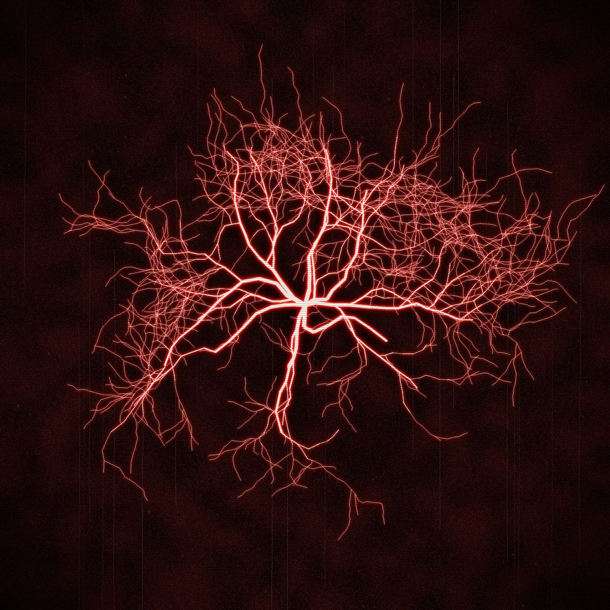

KRIECHSTROM
Прошивка для M-VAVE FM-1 под мрачный индастриал и EBM: четыре дорожки, пошаговый секвенсор, перегруженные синтезаторы, драмы и живые эффекты.
Поставить на FM-1 Читать мануал Шпаргалка Скачать @FWSC@


Что внутри
- GLCH, движок из Glitchbox: клиппинг, фолдер, резонансный фильтр, понижение разрядности и микрозаикание; @NGLCH@ звуков, у большинства уже стоит педаль перегруза.
- @NSOUNDS@ звуков в 13 движках, готовых к игре: перегруженные басы, холодные лиды, расстроенные клавиши, пэды, шумы и текстуры, плюс 13 драм-китов. Список можно фильтровать по категориям.
- DICE: держи SEQ, жми F5, и у дорожки новая партия в одном из восьми настроений, от MACHINE до HUSH.
- HAPPY ACCIDENT: держи EDIT, жми G5, и два-три параметра звука случайно меняются. Удержание SAVE отменяет.
- DAMAGE, WALL и HISS на весь микс (FX > DAMAGE): износ ленты или цифры с выпадениями; стена звука (всё записано как будто трижды, под низом добавлена октава, всё сильно сжато); шипение ленты, пока она крутится. Громкость остаётся прежней. Два такта сухо, потом DAMAGE на ленте, потом цифровой. Два такта сухо, потом WALL.
- INFECT, педаль-сайдчейн (PEDAL > INFCT): выбираешь другую дорожку источником (SRC), и эта дорожка
на неё реагирует. MODE:
- GATE: дорожка звучит только на ударах источника, рубленый гейт от бочки;
- DUCK: проседает на каждом ударе и снова поднимается, та самая «качка» пэда;
- CRUSH и FOLD: каждый удар её искажает;
- RING: две дорожки перемножаются, металлический звон;
- VOX: вокодер, драмы (или любая дорожка) говорят через пэд. Тот же сайдчейн, только по 8 частотным полосам.
- HOWL и MIC в GLCH: без генератора, петля, которая кормит сама себя. HOWL это струна в перегрузе, которая тянется и воет в строй; MIC это микрофон перед колонкой, который воет на ноте. Два такта сухо, потом мелодия превращается в FEEDBACK, а позже в SCREAMER.
- RESONATE на весь микс: четыре струны, настроенные на аккорд (KEY, CHORD), звенят от всего, что играет. Два такта сухо, потом RESONATE в ля миноре: слушай паузы.
- SPLICE на весь микс: плёнку режут и склеивают неправильно. На шестнадцатых вместо того, что играет, вклеивается кусок: последняя шестнадцатая ещё раз или задом наперёд, кусок из прошлой доли, плёнка, затянутая на октаву вниз, или просто обрыв. Одна ручка: как часто и как злобно. Два такта сухо, потом SPLICE, с 6-го такта злее.
- Секвенсор на 64 шага на каждой дорожке: локи, условия, рэтчеты, автоматизация, песни.
- Драмы: 13 китов, включая DESTROY, восемь линий, сетка на клавишах.
- Живые эффекты на клавишах: повторы, остановка ленты, фриз, свипы фильтра, ROLL, GATE, броски в ревер и дилей.
- MIDI вход по USB и TRS, MIDI learn, USB-аудио. На компьютере видна как KRIECHSTROM.
- Чёрное с красным, крупные читаемые цифры, подсказки на экране.

Kriechstrom по-немецки ток утечки по поверхности изоляции. На старой изоляции он оставляет ветвистый след вроде этого, фигуру Лихтенберга.
Зачем
Glitchbox сделан на Felucca 1.5.1 под старый чип памяти FM-1 и на новых экземплярах не запускается. KRIECHSTROM собран на текущей Felucca, которая поддерживает оба чипа, и переносит из Glitchbox движок GLCH и эффекты.
На чём сделано
KRIECHSTROM сделан на основе Felucca 1.8.2 (Leo Kuroshita, Hügelton Instruments), с частями Glitchbox (erikdevos) и идеями из DIRGE (sinscum). Спасибо всем троим за вдохновение. Свободная программа под GNU GPL 3.0: исходники этой сборки (@SRCSIZE@).